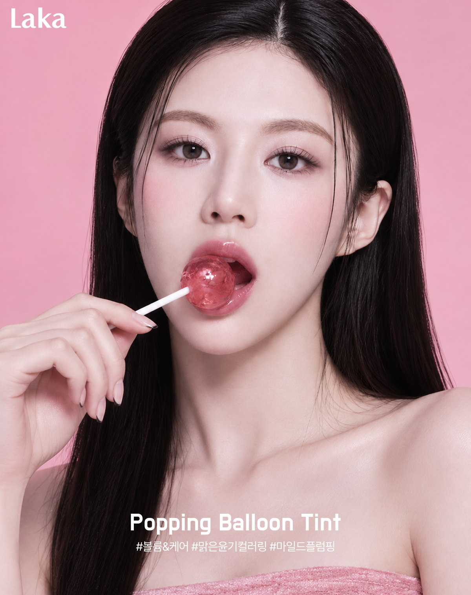
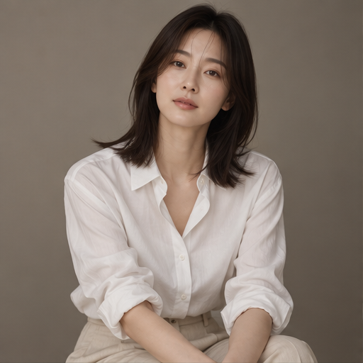
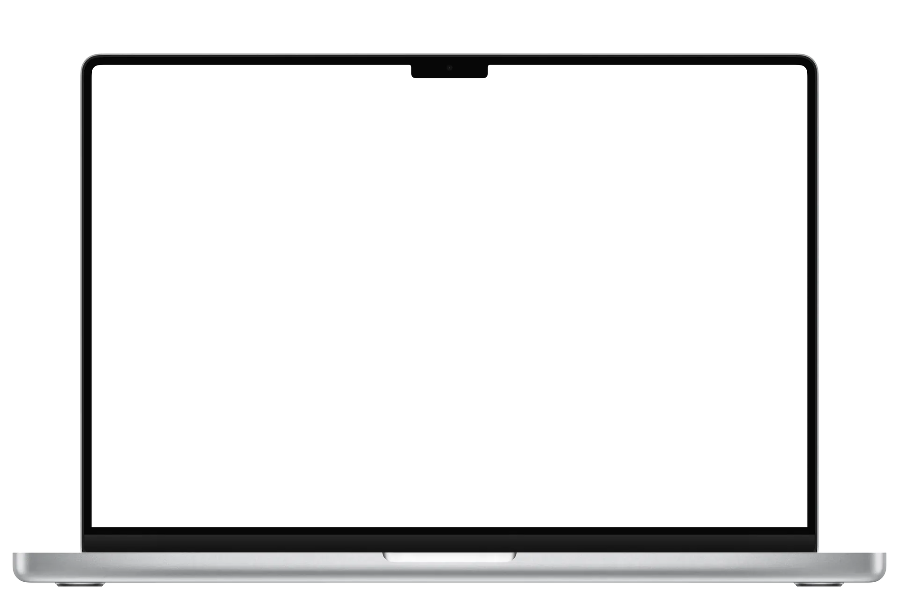
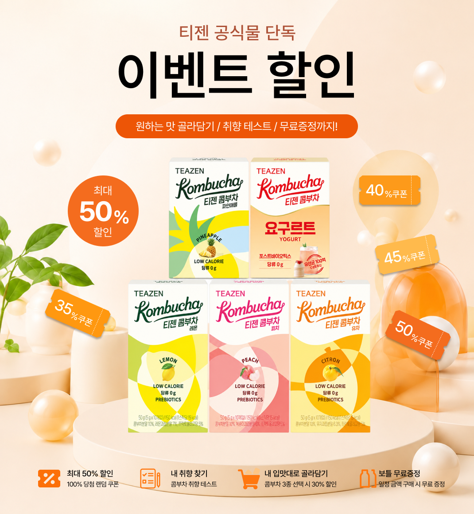

DETAIL 01 / 03 뷰티 상세페이지 디자인
Laka
틴트 컬러 & 텍스처 프로모션
라카 틴트의 맑은 광택과 생기 있는 컬러를 강조한 상세페이지 디자인입니다. 인물 레퍼런스를 기반으로 AI 모델 이미지를 직접 생성하고, 제품 텍스처와 컬러 비주얼을 조합해 제품의 매력을 시각적으로 표현했습니다.
표현은 달라도, [바라보는 시선]은 하나.

웹사이트부터 상세페이지, AI 영상까지.
서로 다른 매체의 특성을
이해하고,
각각의 목적에 맞는 시각적 경험을 만들어갑니다.
WORK selected projects
WORK selected projects
01 / 03
메인페이지 리뉴얼
브랜드의 특성을 반영한 웹사이트 리뉴얼 디자인부터 반응형 레이아웃과 인터랙션 구현까지, 직접 작업한 결과물을 소개합니다.

WEB RENEWAL
BRAND HERITAGE
INTERACTION
RESPONSIVE WEB
WEB RENEWAL
WARM & FRIENDLY
HAND-DRAWN GRAPHICS
MOTION DESIGN
02 / 03
AI 광고 영상 제작
브랜드마다 다른 이야기를 AI 영상으로 표현했습니다. 장면별 연출과 프롬프트를 설계하고, 생성된 영상을 편집해 하나의 광고 콘텐츠로 완성했습니다.
PAWLY · SIPON · 새콤달콤
반려동물의 일상부터 커피 한 잔의 여유, 풋풋한 고백의
순간까지.
각기 다른 이야기를 AI 영상으로 표현하고, 세
편의 광고 영상으로 완성했습니다.
Video 01 / 03 · 가상 반려동물 브랜드 광고
우리의 이야기를 담다.
Video 02 / 03 · 가상 커피 브랜드 광고
A sip of a calmer day.
Video 03 / 03 · 스토리형 제품 광고
말하지 못한 마음을 전해보세요.
03 / 03
상세페이지 · 프로모션 디자인
제품의 특징과 브랜드별 분위기를 고려해 제작한 상세·이벤트페이지 디자인입니다. AI 이미지 생성과 비주얼 연출, 콘텐츠 배치를 활용해 제품의 매력과 프로모션 정보를 효과적으로 전달했습니다.

DETAIL 01 / 03 뷰티 상세페이지 디자인
틴트 컬러 & 텍스처 프로모션
라카 틴트의 맑은 광택과 생기 있는 컬러를 강조한 상세페이지 디자인입니다. 인물 레퍼런스를 기반으로 AI 모델 이미지를 직접 생성하고, 제품 텍스처와 컬러 비주얼을 조합해 제품의 매력을 시각적으로 표현했습니다.

EVENT 02 / 03 · 카밀
KAMILL CARE DAYS
카모마일을 중심으로 한 카밀의 자연주의 이미지를 내추럴한 컬러와 식물 비주얼로 표현한 이벤트페이지입니다. 제품의 보습 성분과 브랜드 스토리를 소개하고, 할인·증정·세트 혜택을 단계적으로 배치해 프로모션 정보를 쉽게 탐색할 수 있도록 구성했습니다.

EVENT 03 / 03 · 콤부차
티젠 콤부차 이벤트 할인
티젠 콤부차의 상큼하고 청량한 이미지를 오렌지 컬러와 제품 비주얼로 표현한 이벤트페이지입니다. 할인과 증정 혜택을 카드형 레이아웃으로 구성해 프로모션 정보를 직관적으로 전달했습니다.
SKILL tools & skills
SKILL tools & skills
SKILL
웹사이트 구현부터 콘텐츠 디자인, AI 영상 제작까지. 다양한 프로젝트를 진행하며 직접 활용한 도구들을 소개합니다.
DESIGN
WORKFLOW
FRONTEND
INTERACTION
AI TOOLS
VIDEO
AI 도구는 아이디어 구체화·문구 작성·이미지 및 영상 제작에 활용합니다.
아이디어를 시각적으로 표현하고, 디자인을 실제 결과물로 완성하는 과정.
그
안에서 발견한 저만의 관점과 이야기를 전합니다.
처음에는 영상 제작 분야에 관심이 많았습니다. 하지만 취업을 준비하면서 영상 제작뿐만 아니라 다양한 실무 역량을 갖추는 것이 중요하다고 생각했습니다. 이를 계기로 웹디자인과 웹 구현, AI 콘텐츠 제작까지 배우며 제가 할 수 있는 일의 범위를 넓혀가게 되었습니다.
레퍼런스를 찾는 것부터 생각한 디자인을 실제 화면으로 구현하는 과정까지 쉽지 않았습니다. 예상대로 결과가 나오지 않아 여러 번 수정하기도 했지만, 하나씩 해결하며 완성도를 높여갔습니다. 그렇게 완성된 결과물을 보면서 제가 직접 만들었다는 사실에 큰 성취감을 느꼈습니다.
책임감 있는 태도와 원활한 소통이라고 생각합니다. 자신의 의견만 고집하기보다 다른 사람의 생각도 존중하고, 더 나은 방향을 함께 고민하는 자세가 필요하다고 느꼈습니다. 또한 맡은 일에 성실하게 참여하고 끝까지 책임지는 태도를 중요하게 생각합니다.
웹사이트 구현부터 상세페이지 디자인, AI 영상 제작까지 다양한 작업을 경험했습니다. 앞으로는 이러한 경험을 바탕으로 콘텐츠를 기획하고 제작하는 과정에 적극적으로 참여하고 싶습니다. 한 가지 분야에만 머무르기보다 새로운 기술과 도구를 꾸준히 배우며 다양한 업무에 유연하게 대응할 수 있는 사람으로 성장하고 싶습니다.